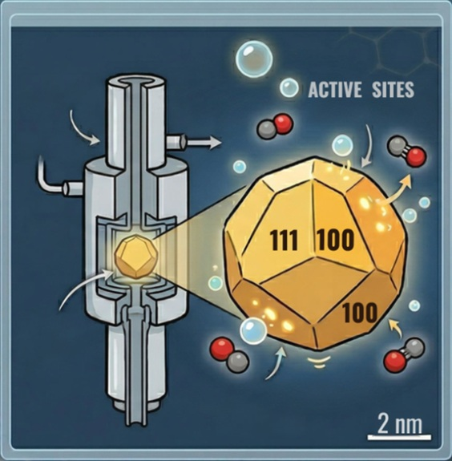
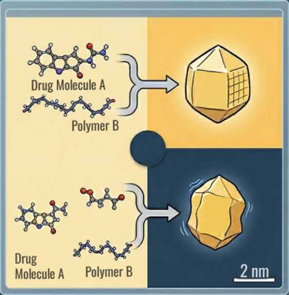

About Us
Welcome to the Biran Lab
At the Biran Lab for Dynamic in situ TEM, we specialize in visualizing chemical reactions as they happen. Our research focuses on using state-of-the-art transmission electron microscopy to observe dynamic processes at atomic resolution under real-life environmental conditions.
By combining advanced hardware with high-speed imaging, we bridge the gap between theoretical modeling and physical observation. Our mission is to uncover the fundamental mechanisms driving material transformation, catalysis, and crystal growth.
We are always looking for curious and motivated students to join our journey at the forefront of microscopy science.
Research
1. Elucidation of Heterogeneous Catalysis via Operando TEM

Our research focuses on fundamentally redefining the use of electron microscopy for studying catalysts in reactive media. Instead of treating electron-dose as a constraint, we treat it as a primary scientific resource within a "dose-aware" operando platform. By coordinating multiple TEM modalities—including open and closed gas-cell systems—we aim to follow the same catalytic site or facet over time under true working conditions. This allows us to map exactly where catalytic turnover initiates and how active-site ensembles fluctuate in response to the environment, transforming TEM from a static imaging tool into a temporal discovery engine for sustainable chemical processes.
2. Polymeric and Small Organic Crystal Design

We address the critical challenge of imaging highly beam-sensitive materials, such as polymers, pharmaceuticals, and organic semiconductors. By leveraging adaptive low-dose workflows and advanced 4D-STEM techniques, our lab uncovers the earliest stages of crystallization and soft-matter phase transformations that are usually obscured by beam damage. A central pillar of our work is the investigation of polymorphism—the ability of a molecule to exist in multiple crystalline forms. Since even a slight structural variation can completely change a material's solubility, stability, or efficacy, we use near-atomic resolution TEM to visualize how specific environmental triggers drive the selection of one polymorph over another. This insight is vital for the pharmaceutical industry and advanced materials science, where controlling the crystalline "habit" is the key to predictable performance.
News
-
March 2026: The Biran Lab website is officially live!
-
January 2026: Our latest paper on "Open Gas-Cell TEM" has been published in Ultramicroscopy.
-
October 2025: Dr. Biran joins the Faculty of Engineering at Bar-Ilan University.
Team
Principal Investigator

Dr. Idan Biran
Assistant Professor of Engineering at Bar-Ilan University.
Email: idan.biran@biu.ac.il
Idan leads the Biran Lab, focusing on the development of in situ TEM methodologies for atomic-scale observation of dynamic reactions. Previously, he conducted research on electron beam-matter interactions and high-resolution imaging techniques.
Graduate Students
Alex Rivera
MSc Student | alex.r@campus.biu.ac.il
Alex is a 1st-year Graduate student focusing on the growth kinetics of gold nanoparticles within liquid-cell TEM environments.
Sarah Chen
PhD Candidate | s.chen@campus.biu.ac.il
Sarah's research involves atmospheric-pressure gas-cell TEM to study the degradation of catalysts during carbon nanotubes synthesis.
Jordan Smith
Undergraduate Researcher | j.smith@campus.biu.ac.il
Jordan is assisting with the development of automated image processing scripts for tracking atomic displacements in TEM video files.
Publications
* Denotes equal contribution
- Open Gas-Cell Transmission Electron Microscopy at 50 pm Resolution.
Biran, I., Dam, F., . . . Helveg, S. Ultramicroscopy, (2026), 114328.
- The Molecular Basis of Growth Control in Guanine Crystals.
Brenman-Begin, D., Church, J.R., Sahoo, S., Eyal, Z., Biran, I., Kampf, N., . . . Gur, D. Small, (2026), e10102.
- Cryo-tomography and 3D Electron Diffraction Reveal the Polar Habit and Chiral Structure of the Malaria Pigment Crystal Hemozoin.
Klar, P.B., Waterman, D.G., Gruene, T., Mullick, D., Song, Y., Gilchrist, J.B., Owen, C.D., Wen, W., Biran, I., Houben, L., . . . Leiserowitz, L., Elbaum, M. ACS Central Science, (2024).
- Transmission Electron Microscopy Methodology to Analyze Polymer Structure with Submolecular Resolution.
Biran, I., Houben, L., Kossoy, A., Rybtchinski, B. The Journal of Physical Chemistry C, (2024).
- Highly Conductive Robust Carbon Nanotube Networks for Strong Buckypapers and Transparent Electrodes.
Snarski, L., Biran, I., Bendikov, T., Pinkas, I., Iron, M.A., Kaplan-Ashiri, I., Weissman, H., Rybtchinski, B. Advanced Functional Materials, (2023), 34, 2309742.
- Real-Space Crystal Structure Analysis by Low-Dose Focal-Series TEM Imaging of Organic Materials with Near-Atomic Resolution.
Biran, I., Houben, L., Weissman, H., Hildebrand, M., Kronik, L., Rybtchinski, B. Advanced Materials, (2022), 34, 2202088.
- Organic Crystal Growth: Hierarchical Self-Assembly Involving Nonclassical and Classical Steps.
Biran, I., Rosenne, S., Weissman, H., Tsarfati, Y., Houben, L., Rybtchinski, B. Crystal Growth & Design, (2022), 22, 6647–6655.
- Continuum Crystallization Model Derived from Pharmaceutical Crystallization Mechanisms.
Tsarfati, Y.* and Biran, I.*, Wiedenbeck, E., Houben, L., Cölfen, H., Rybtchinski, B. ACS Central Science, (2021), 7, 900–908.
- From the Mechanism to the Device in Polymer-Assisted Rubrene Crystallization.
Bronshtein, I., Weissman, H., Biran, I., Rybtchinski, B. Crystal Growth & Design, (2021), 21, 4064–4072.
- A Direct-Imaging Cryo-EM Study of Shedding Extracellular Vesicles from Leukemic Monocytes.
Koifman, N., Biran, I., Aharon, A., Brenner, B., and Talmon, Y. Journal of Structural Biology, (2017), 198, 177–185.
Contact
We are always looking for motivated students and collaborators. Please reach out to us via the links below.
Location:
Faculty of Engineering, Building 110
Bar-Ilan University, Ramat Gan, Israel